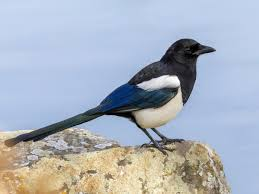

This article is about the birds in the family Corvidae. For the...

According to analysis, magpies do not form the monophyletic group they are traditionally believed to be a long tail has certainly elongated (or shortened) independently in multiple lineages of corcvid... According to analysis, magpies do not form the monophyletic group they are traditionally believed to be a long tail has certainly elongated (or shortened) independently in multiple lineages of corcvid... According to analysis, magpies do not form the monophyletic group they are traditionally believed to be a long tail has certainly elongated (or shortened) independently in multiple lineages of corcvid
According to analysis, magpies do not form the monophyletic group they are traditionally believed to be a long tail has certainly elongated (or shortened) independently in multiple lineages of corcvidAccording to analysis, magpies do not form the monophyletic group they are traditionally believed to be a long tail has certainly elongated (or shortened) independently in multiple lineages of corcvidAccording to analysis, magpies do not form the monophyletic group they are traditionally believed to be a long tail has certainly elongated (or shortened) independently in multiple lineages of corcvidAccording to analysis, magpies do not form the monophyletic group they are traditionally believed to be a long tail has certainly elongated (or shortened) independently in multiple lineages of corcvid3
See magpie on wikipedia